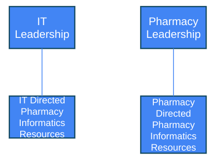
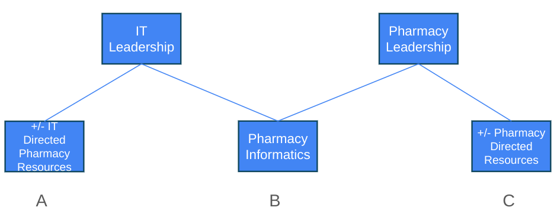
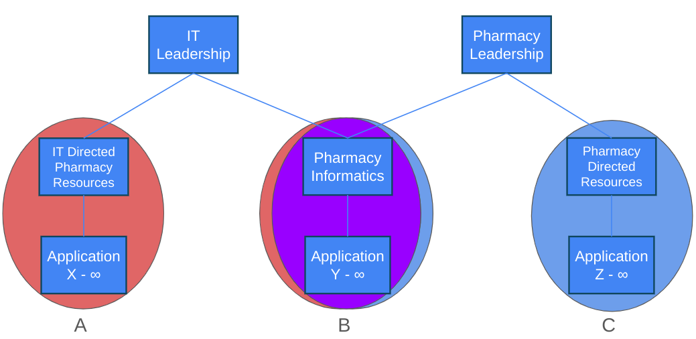
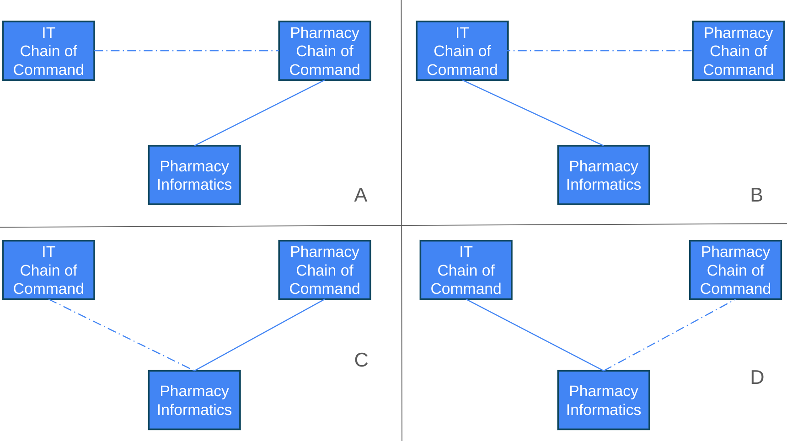
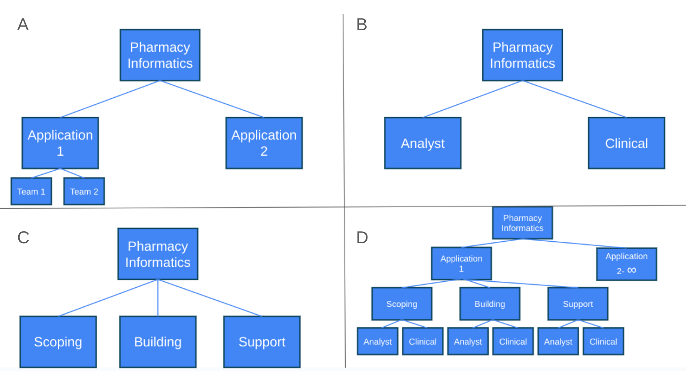

Pharmacy Informatics Roles and Organization Chart Considerations Within Health System Settings
Author: Barry McClain PharmD MS
Date: 1/12/2025
A publication of https://www.pharmacyinformatics.net/
Introduction
Team dynamics can be significantly impacted by how the organization chart is configured between operations and IT/HIT (information technology/healthcare information technology). In healthcare, especially for health systems, this relationship is typically complex. Here are some reasons why:
- Engaging frontline staff (including clinicians) in the best use of applications and technology is critical in the success of implementing and adopting IT solutions. But that engagement begins to become grey once frontline staff become technical and competent in application level build and beyond.
- Individual departments and/or groups are often in the best positions to select, implement, and maintain applications and technology for their highly specialized areas. This can create grey lines when operations become the logical owners for IT solutions.
- The demand for IT solutions is very high within all areas of the business. Added to that, operational margins can be variable/volatile too for funding support. This can create a lot of pressure on resources, and in some cases, workarounds that range from trying to simply “keeping the lights on” to pioneering novel innovation. There are a lot of resourcing options that include obtaining contractors, “offshoring” services, resourcing current teams, producing additional teams, redesigning teams and/or workstreams, etc. How these changes happen can drastically evolve team structure
- There is no one-size-fits all model. Health systems are variable in size, geography, services, integration, platforms, culture, patient population, types (for profit, not for profit, government, etc), and the list goes on. On top of that, there can be a lot of historical organizational setups. Some good, bad, or ugly. Finding the right fit means finding the best design to build the right solutions efficiently and effectively for the organization.
None of this is specific to pharmacy informatics/pharmacy IT, and can be easily applied to any other area of healthcare IT. But pharmacy informatics is indeed this author’s specialty area and is certainly an area where it varies significantly across the entire globe from experience. The goal of this information is not necessarily to determine what the best model is for pharmacy informatics organization structures. It is to provide the different configurations and the associated pros and cons.
Role Definitions for a Pharmacy Informatics Team
Major Roles*
- Vice President and above: These leaders provide a key role in creating the vision, budgeting, and support of the team at an organizational level. Also provides the pipeline and approval for new innovation and technology that enhances and/or involves medications and/or pharmacy.
- Director: Keeps teams aligned with strategic direction. Balances the needs of all stakeholders (Leadership, pharmacy, IT, other respective teams, etc)
- Manager: Accountable for the day-to-day IT operations, processes, and people on their team(s). Ensure their team(s) have what they need to succeed.
- Solution Architect/Coordinator/Specialist: Have subject matter expert level skill levels for the design and use of applications and technology. Decrease activation energy of projects by defining scope, feasibility, and removing barriers. Mitigates fall-outs.
- Informatics Pharmacist (Analyst/Builder/etc): A specialist in the planning, implementation, troubleshooting, and support of medication use applications and technology. Have both technical and professional experience. Usually advance into more specialized roles depending on size and scope of the team.
- Analyst (Pharmacy Domain) : Have hands-on experience with the use of medication use systems and privileged access to support both end-users and the application team. Should be primary owners of pharmacy tasks and projects, but not exclusive. Pharmacy domain meaning managed under the pharmacy department structure.
- Analyst (IT Domain): Have technical backgrounds in the evaluation and support of med use applications. Are competent in understanding the details of how a process flows/works. Should be primary owners of IT tasks and projects, but not exclusive. IT domain meaning managed under the IT department structure.
*Leadership levels and titling varies across organizations, and can be coupled and/or separated differently. For demonstration purposes only
More Roles Commonly Part of a Pharmacy Informatics Which can be Directly or Indirectly Part of the Team
- Project Management/Managers: Staff dedicated to assisting project teams to assemble resources, seek approvals, scope, plan, and execute projects through completion. Project managers typically keep the team on task by organizing and maintaining the various lists of requirements, supplies/hardware, build plans, timelines, costs, etc
- Trainers and “At-the-Elbow-Support”: Informatics support for training materials, updates, and frontline support is critical for the success of implementations and ongoing engagement
- Report and Data Analysts: Maintaining support in analytics is an essential part of all levels of the organization (executive, operational, clinical, technical, etc). The introduction of artificial intelligence and complex algorithms does not make this conversation easier. The team structure and support for data management honestly deserves a whole article on its own.
- Residents/Learners: There is always a pipeline of new talent in both the pharmacy and IT pathways. Creating internships, residency programs, and other opportunities to recruit and grow staff is critical for the team’s long-term sustainability. In additional to bringing in new talent, there is also an investment in the baseline team to ensure competency in coaching, teaching, mentoring, etc.
- Medication Charging and Billing Experts: Organizationally, there are typically a variety of roles under revenue cycle, finance, and pharmacy that provide input/oversight into medication charging and billing. But no matter how it is designed, there is a strong need to have expertise on the pharmacy informatics team in this area to ensure compliance, maintenance, overall application enhancements, and support.
- Robotics and Automation Analysts: Individuals that are experts in the setup, deployment, maintenance, and support of medication related robotics and automation solutions like medication carousels, dispensing cabinets, IV robotics, packagers, and that is just scratching the surface.
- Field Support: Boots on the ground that support endpoint devices and troubleshooting.
- Help Desk/Service Desk/On-Call: Triaging and providing first tier support for reported issues.
- Developers/Engineers: For in house software solutions (web applications, information sharing, form entries, etc), scripting, database creation, and integration/interfacing needs (APIs, sFTP, etc). Although this sounds historically outside of pharmacy and pharmacy informatics, more collaborative tools for example like MicroSoft Sharepoint, PowerApps, and Flow are making the solutions more practical to create without as much advanced technical training, tools, and/or access.
Different Organization Chart Concepts and Relationships for Pharmacy Informatics
Figure 1 represents a simplified divided model. This design has separate pharmacy informatics teams, which would have hard lines between the scope of which applications are owned and/or roles assigned. The pharmacy informatics teams identify and exchange work as different teams completely.
Pros: Clear direction and strategy within the solid line relationship. Control of resources and budget independent of the reciprocating department.
Cons: Duplication of resources. Variation and misalignment of IT practices, prioritization, strategy, etc. due to the disconnection between departments Might be easier to direct resources within a team, but when needed cross-team support, it likely will be harder in the long run as the landscape changes in both pharmacy and IT.
Pharmacy-IT Hybrid teams: This is the most complicated configuration based on the amount of possible conflict. This arrangement has intermingled resources provided and led by both the pharmacy and IT department concurrently, as shown by box B in figure 2 where solid line relationships connect up to IT and pharmacy. This forces management on this team to negotiate with each other regarding how to align the team and work together.
A hybrid model can still have elements of the divided model too, as shown by box A and C in figure 2, where resources can maintain hard lines between particular applications and/or roles.
Pros: Cover a lot of ground across the different departments. Given the complexities of the departments and the amount of conversations/meetings, having the two sides come together can provide a clearer big picture and help meet both sides.
Cons: With having different departments influencing the direction, it is easy to create competing agendas and build conflict within the team. This is more easily defined as “tug-o-war”.
Figure 3 illustrates the hybrid relationship in more detail. In this example, the overlapping resources from the IT (red) and pharmacy (blue) departments come together to form an integrated team (purple). Extending further in this example, the integrated team is working on the same specific application(s). Whereas the separate dedicated resources outside the integrated team (pure “red” IT and pure “blue” pharmacy groups) are working on their own suite of application(s). This integrated team of resources could be designed optimally to provide a cross matrix relationship between the two departments assuming the roles from the business and IT complement each other functionally. This type of cross matrix team formation becomes more challenging as the roles become more similar (i.e. they do the same types of functions).
Figure 4 displayed now introduces dotted-line relationships instead of pure solid lines.
Pharmacy dominant/solidline figure 4 (A and C)
A pharmacy dominant relationship couples the direction and resources from the pharmacy department for the pharmacy Informatics team, which may or may not follow the IT department's philosophy.
The benefits of a pharmacy direct reporting structure comes with the amount of control of the resources. The benefit of control also comes with the risk of building conflict between IT and pharmacy groups. Another risk is the pharmacy resources could also be viewed as “shadow IT”, which is usually looked at very negatively from an IT management perspective, putting risk of losing privileges, access, inclusion, etc over time.
IT dominant/solidline figure 4 (B and D)
A change in direct reporting structures to IT will provide more alignment with internal processes within the IT department and managing like-for-like across teams. Systematic prioritization and processes are not always satisfactory for the business when a lot of overhead is created, especially if the solutions are “line-in-site” and can presumably be implemented quickly. The perception of timelines are not always what they seem when integrated teams, dependencies, approvals, etc need to be accounted for.
Level of influence
The use of dotted lined relationships make a difference too depending if they are connected directly to the specific team versus at a higher leadership level. The upper level of figure 4 (A and B) represents a higher level of leadership connection, having in general, a more strategic relationship. The lower level dotted line (C and D) relationship in figure 4 provides closer influence to the day-to-day activities.
Before this point, the focus was on the high-level reporting structure. Figure 5 gets into the more granular team setup in how the team functions and work is approached.
- Application based
Pros: Application focus helps increase application expertise. Also possible better work satisfaction with seeing the full product cycle from beginning to end can be helpful. Having fullsight of the application management from design, build, support, and maintenance makes hand-offs and rationale for change transparent. Further granular teams can split out within a complex application if there are numerous functions, although there is additional complexity with that consideration.
Cons: Heavily dependent on the application in question, but can be very hard to sustain as the application becomes overly complex and/or team growth. Given the team resource size, is it possible to really have the same staff manage all triage, enhancement work, upgrades, maintenance, and support of the application? That is a reasonable question.
- Role based
Pros: With diverse and constructive role definitions, there can be enhanced synergy and teamwork.
Cons: Without diverse and constructive role definitions, toes can be stepped on. Can be subjective with ownership of work and cause “turf wars”.
- Project phase based
Pros: This design works well for large and complex projects that provides easier focus if project teams are broken down.
Cons: Each phase requires handoffs and good documentation to prevent disconnections. Team engagement can be impacted through the feedback loop if there are mishaps at any step.
- Combination
Combine some/all attributes of the different models into one framework and have a composite of the above pros and cons.
Conclusion and Considerations
- Creating an effective pharmacy informatics team is complicated, as is any HIT team. There is no perfect model. Different setups and configurations that make sense today, will likely change over time. Here are some important considerations in the journey of making changes to team structure:
- Communication: The best organization structure and team model is meaningless without good communication and transparency. Most problems that come from any structure is because different sides of the organization are not getting what they need. In other words, start here before doing anything else.
- Collaboration: No multi-department, multi-functional team should be fully designed and controlled in isolation. Working together will produce a result that works for all sides of the equation. Getting feedback from the frontline team mates is important too.
- Culture: A successful team starts at the top, and a functional cross team relationship at the leadership level will certainly help the dynamics downstream
- Co-investment: There should be no losers when it comes to where a team is reporting to. By having a team with multiple stakeholders, the sum of all parts should even be a more positive one in terms of resourcing, funding, support, reduction of barriers, etc. The end result should be “Win Win”.
Linkage to Agile Principles: a related topic to team structure are agile principles and other frameworks for work efficiency. How teams are designed can certainly have an impact on output, but there are additional concepts to consider to apply to a project team. See additional resources on this site.